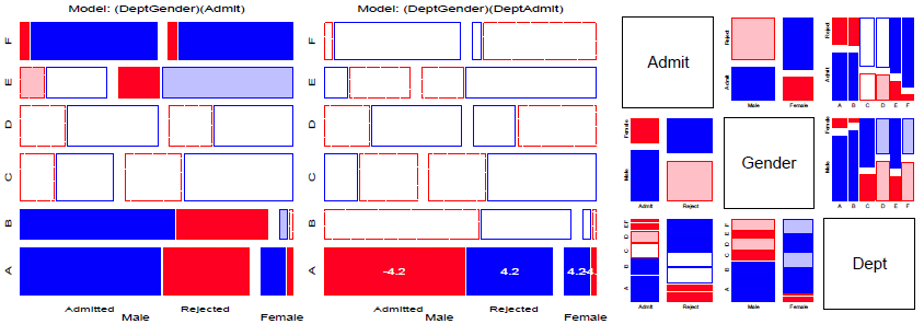

Psyc 6136: Categorical Data Analysis
Michael Friendly
Winter, 2023
Course Description
This course is designed as a broad, applied introduction to the statistical analysis of categorical (or discrete) data, such as counts, proportions, nominal variables, ordinal variables, discrete variables with few values, continuous variables grouped into a small number of categories, etc.
The course begins with methods designed for cross-classified table of counts, (i.e., contingency tables), using simple chi square-based methods.
It progresses to generalized linear models, for which log-linear models provide a natural extension of simple chi square-based methods.
This framework is then extended to comprise logit and logistic regression models for binary responses and generalizations of these models for polytomous (multicategory) outcomes.
Throughout, there is a strong emphasis on associated graphical methods for visualizing categorical data, checking model assumptions, etc. Lab sessions will familiarize the student with software using R for carrying out these analyses.
Course topics are listed below. See the Course schedule for details.
Overview & Introduction

Discrete Distributions

Two-way Tables

Loglinear models & mosaic displays

Correspondence Analysis

Copyright © 2018 Michael Friendly. All rights reserved. || lastModified :
friendly AT yorku DOT ca
 orcid.org/0000-0002-3237-0941
orcid.org/0000-0002-3237-0941